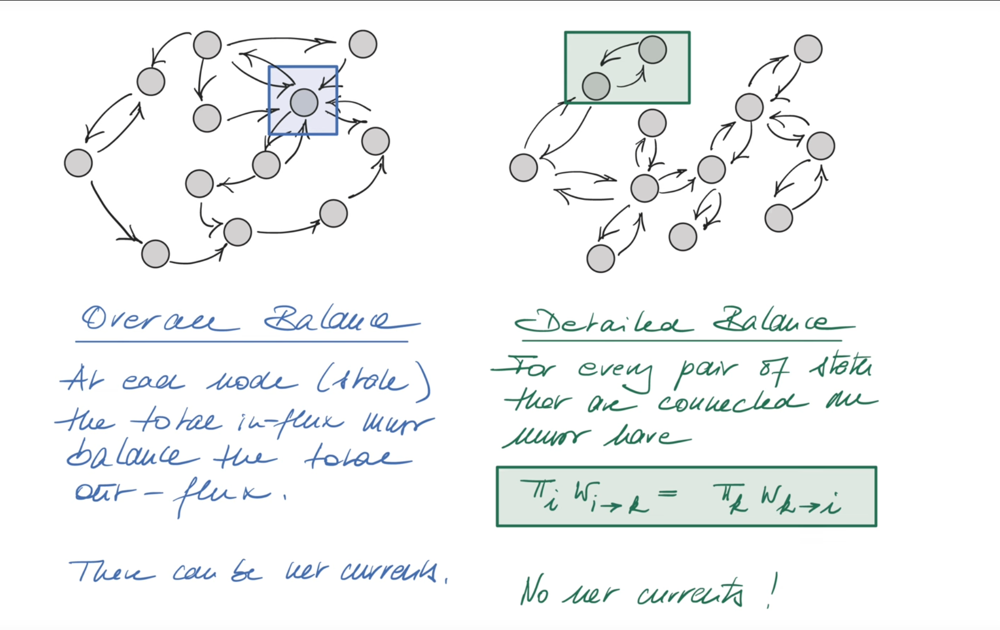

Introduction: Seeking a Unique and Physical Steady State¶
In the previous lecture, Prof. Erwin Frey developed the core tools for Markov processes—the forward master equation and the Q matrix. We know that the time evolution of a system's probability distribution is governed by the following concise matrix equation:
where \(P(t)\) is a column vector whose \(n\)-th element \(P_n(t)\) represents the probability that the system is in state \(n\) at time \(t\). The Q matrix, also known as the transition-rate matrix, has elements defined as:
- Off-diagonal elements \(Q_{nm} = w_{m \to n} \geq 0\) (for \(n \neq m\)), representing the transition rate from state \(m\) to state \(n\).
- Diagonal elements \(Q_{nn} = -\sum_{m \neq n} w_{n \to m}\), representing the total exit rate from state \(n\).
We also derived a crucial property of the Q matrix: its column sums are zero.

In physics, chemistry, biology, and many other fields, we are often most concerned not with transient behavior, but with what state the system will ultimately reach after long-term evolution. This final, time-independent state is what we call a steady state (steady state) or equilibrium (equilibrium). As the professor pointed out on the blackboard, this mathematical property directly guarantees the existence of steady states in the system. A steady distribution \(\pi\) is a probability distribution that does not change over time, i.e., \(\frac{d\pi}{dt} = 0\). Substituting into the master equation, we obtain the condition that steady states must satisfy:
This is precisely an eigenvalue equation in linear algebra, telling us that the steady state \(\pi\) is the eigenvector of the Q matrix corresponding to eigenvalue 0. The property that column sums are zero ensures that 0 must be an eigenvalue of the Q matrix.
However, the knowledge from the previous lecture leaves us with some key, unresolved physical questions:
-
Uniqueness: Is this steady-state solution \(\pi\) the unique long-term fate of the system? Or can the system have multiple different steady states, with the final state depending on initial conditions?
-
Physicality: As a probability distribution, every component \(\pi_n\) of the steady-state vector must be non-negative, i.e., \(\pi_n \geq 0\). Can we guarantee that this mathematical solution is physically meaningful? Furthermore, can we guarantee \(\pi_n > 0\), i.e., that in the steady state, no state is completely impossible to appear?
-
Reachability: Under what physical conditions can uniqueness and positivity hold?
To answer these core questions about the long-term behavior of systems, we need a powerful mathematical tool that specifically deals with matrices having certain properties. This tool is the Perron-Frobenius theorem. The core task of this lecture is to use this theorem to establish a solid theoretical foundation for the stochastic processes we care about, proving that under specific conditions, they must necessarily evolve to a unique, physically meaningful steady state.
1. Perron–Frobenius: A Powerful Guarantee for Positive Matrices¶
The Perron–Frobenius theorem (abbreviated as PF theorem) is a profound result in linear algebra that reveals the special properties of eigenvalues and eigenvectors of matrices with nonnegative elements.
The Perron-Frobenius theorem (Perron-Frobenius theorem) originated in the early 20th century, proposed and refined by German mathematicians Oskar Perron (1907) and Ferdinand Frobenius (1912), respectively. This theorem specifically studies nonnegative matrices (all elements ≥ 0) and positive matrices (all elements > 0), with the core conclusion that for irreducible nonnegative matrices, there exists a unique maximum real eigenvalue (the Perron root), and the corresponding eigenvector has all positive components.
This theorem has extremely wide applications in modern science: in Markov chain theory to guarantee the uniqueness and physicality of steady-state distributions; in population dynamics to analyze the long-term behavior of population growth; in economics to study input-output models and economic growth theory; in network science to compute web page rankings (such as Google's PageRank algorithm) and social network influence; in ecology to model ecosystem stability; in quantum physics to analyze the evolution of open quantum systems.
The PF theorem provides us with a powerful mathematical tool that can guarantee from a purely mathematical perspective that many physical and biological systems must necessarily evolve to a unique, physically meaningful steady state, making it an important bridge connecting abstract mathematical theory with the behavior of complex systems in the real world.

1.1 Statement of the Theorem¶
The theorem can be stated in simple terms as follows:
For a real square matrix \(M\) with all elements being nonnegative (\(M_{nm} \geq 0\)) and indecomposable (also called irreducible), the following conclusions hold:
1) There exists a unique, real positive eigenvalue \(\lambda\) that has the largest absolute value among all eigenvalues. That is, for any other eigenvalue \(\mu\) of \(M\) (which may be complex), we have \(|\mu| < \lambda\). This special eigenvalue \(\lambda\) is called the Perron root or dominant eigenvalue.
2) The eigenvector \(p^{(\lambda)}\) corresponding to the Perron root \(\lambda\) is unique (up to multiplication by a positive constant factor) and can be chosen such that all its components are strictly positive (\(p_n^{(\lambda)} > 0\) for all \(n\)).

We can intuitively understand this theorem through a spectral diagram. For a matrix \(M\) satisfying the conditions, all its eigenvalues lie within a disk centered at the origin with radius \(\lambda\) in the complex plane. The Perron root \(\lambda\) itself is an isolated point on the positive real axis, while all other eigenvalues \(\mu\) are strictly inside it.
1.2 Physical Meaning of the Assumptions¶
To understand the power of the PF theorem, we must deeply analyze its two core prerequisite conditions.
Terminology note: In this chapter, "indecomposable" and "irreducible" are synonymous. To match standard Markov process and PF theorem usage, we will use "irreducible" henceforth.
Nonnegativity (\(M_{nm} \geq 0\))¶
This condition is very natural in physical and biological models. Matrix elements often represent quantities that are inherently non-negative, such as species counts, chemical concentrations, or in Markov chains, transition probabilities. This condition is the foundation of the entire theorem.
Indecomposability (Irreducibility)¶
This is the most crucial physical condition when applying the PF theorem. A matrix is indecomposable, meaning the system it describes is a whole, rather than composed of several isolated, non-communicating subsystems. This concept can be understood through several approaches to build the strongest physical intuition:
-
Graph theory perspective: We can imagine each state \(n\) of the system as a node in a graph. If matrix element \(M_{nm} > 0\), we draw a directed edge from node \(m\) to node \(n\), indicating the system can transition from state \(m\) to state \(n\). Then, the indecomposability of the matrix is equivalent to this directed graph being strongly connected. Strong connectivity means that from any node, there exists a path of directed edges that can reach any other node in the graph.
-
Physical perspective: An indecomposable (or irreducible) system, physically means the system can explore all possible state spaces over time. There are no so-called "traps" or "islands" in the system—that is, certain sets of states that, once entered, the system can never leave, or certain states that can never be reached from other parts of the system. As the professor mentioned in class, this is equivalent to "all states are reachable."
-
Formal definition: Mathematically, indecomposability is defined as the matrix having no non-trivial invariant subspaces. A subspace \(V\) is invariant if for any vector \(v \in V\) belonging to that subspace, after transformation by matrix \(M\), the result \(Mv\) still lies within that subspace.
Indecomposability is the mathematical language that guarantees the consistency of the system's global behavior. If a system is decomposable, it's as if it's divided into several parts by an invisible wall. Physically, this means the system's long-term behavior will depend entirely on its initial state. If it starts from "region A," it will be forever trapped in the steady state of "region A"; if it starts from "region B," it will reach the steady state of "region B." This leads to multiple possible steady states, destroying uniqueness.
Therefore, the indecomposability condition, by excluding this possibility of "imprisonment," forces the system, regardless of where it starts, to eventually explore all states and tend toward a globally unified steady state. This deeply connects an abstract mathematical condition with a key physical property—the uniqueness of steady states.
2. Applying PF to Q: Proof of a Unique Steady State¶
We face a direct challenge: the Q matrix we want to analyze does not satisfy the "nonnegativity" condition of the PF theorem, because its diagonal elements \(Q_{nn}\) are negative. So how can we utilize this powerful theorem?
The key insight here is very clever: instead of analyzing the Q matrix directly, we construct an auxiliary matrix \(M\) that is related to it and satisfies the conditions of the PF theorem.
2.1 Constructing a Nonnegative Matrix \(M\)¶
Following the professor's derivation on the blackboard, we define a new matrix \(M\) as follows:
Note: := means "is defined as or equals"
where \(\delta_{nm}\) is the Kronecker function (1 when \(n = m\), 0 otherwise), and \(\alpha\) is a carefully chosen positive constant whose value is the maximum exit rate among all states in the system:
The essence of this construction is to add a sufficiently large positive number \(\alpha\) to the diagonal of the Q matrix, thereby "lifting" all diagonal elements to make them nonnegative.
2.2 Step‑by‑Step Derivation¶
Now, we complete this proof step by step, which will answer our initial questions about the uniqueness and physicality of steady states.
- Prove that \(M\) is a nonnegative matrix:
For off-diagonal elements (\(n \neq m\)), \(M_{nm} = Q_{nm} = w_{m \to n} \geq 0\).
For diagonal elements (\(n = m\)), \(M_{nn} = Q_{nn} + \alpha = -\sum_{m \neq n} w_{n \to m} + \alpha\). According to the definition of \(\alpha\), it is the maximum among all exit rate sums, so for any state \(n\), we have \(\alpha \geq \sum_{m \neq n} w_{n \to m}\). This guarantees \(M_{nn} \geq 0\).
Therefore, all elements of our constructed matrix \(M\) are nonnegative.
- Link the eigenvalue problems of \(Q\) and \(M\):
The eigenvalue equation for \(M\) is \(Mp = \lambda p\). Substituting the definition of \(M\), we get \((Q + \alpha I)p = \lambda p\), where \(I\) is the identity matrix. Rearranging, we obtain:
This relationship is very important. It shows that \(Q\) and \(M\) have exactly the same eigenvectors, while their eigenvalues differ only by a constant \(\alpha\). The eigenvalues of \(Q\) are the eigenvalues of \(M\) minus \(\alpha\).
- Apply Perron-Frobenius to \(M\):
We assume that the Markov process under study is irreducible, which means its state space is strongly connected. This property directly guarantees that our constructed matrix \(M\) is indecomposable. Therefore, \(M\) satisfies all conditions of the PF theorem.
According to the PF theorem, \(M\) has a unique, real positive dominant eigenvalue, which we call \(\lambda_{PF}\), and a corresponding eigenvector \(p^{(\lambda_{PF})}\) with all strictly positive components.
- Determine the value of the dominant eigenvalue \(\lambda_{PF}\):
This is the core step of the proof, completely reproducing the professor's blackboard derivation.

We sum the eigenvalue equation of \(M\) over all components \(n\):
On the left side, we swap the order of summation and substitute the definition of \(M\):
The summation inside the brackets can be calculated. We know that the column sums of the \(Q\) matrix are zero, i.e., \(\sum_n Q_{nm} = 0\). And \(\sum_n \alpha \delta_{nm}\) is non-zero only when \(n = m\), with value \(\alpha\). Therefore, the value inside the brackets is \(\alpha\). The equation becomes:
Since \(\sum_m p_m^{(\lambda_{\mathrm{PF}})}\) and \(\sum_n p_n^{(\lambda_{\mathrm{PF}})}\) are the same sum, and according to the PF theorem, all components of \(p^{(\lambda_{\mathrm{PF}})}\) are positive, this sum is also positive and can be canceled from both sides. We finally obtain an amazingly simple result:
- Return to Q matrix, obtain the final conclusion:
We have found that the dominant eigenvalue of \(M\) is \(\alpha\). Now, using the relationship from step 2, \(Qp = (\lambda - \alpha)p\), we can find the eigenvalue \(\lambda_Q\) of the Q matrix corresponding to this dominant eigenvector:
2.3 Summary and Physical Meaning¶
This proof answers our initial questions. It tells us:
For any continuous-time Markov process with an irreducible state space (i.e., all states are mutually accessible), its transition rate matrix \(Q\) has a unique eigenvector with eigenvalue 0. According to the Perron-Frobenius theorem, this eigenvector can be chosen to have all components strictly positive.
This vector is precisely the unique, physically meaningful steady-state distribution \(\pi\) that we have been seeking. Its uniqueness guarantees that the system's long-term behavior is deterministic, independent of the initial state. Its positivity (\(\pi_n > 0\)) ensures that in the steady state, every state in the system has a non-zero probability of being visited, which aligns with our physical intuition about an "active," irreducible system.
Furthermore, since \(\lambda_{\mathrm{PF}} = \alpha\) is the dominant eigenvalue of \(M\), all other eigenvalues \(\mu\) satisfy \(|\mu| < \alpha\). Consequently, all other eigenvalues of \(Q\), given by \(\lambda_Q' = \mu - \alpha\), will satisfy \(\mathrm{Re}(\lambda_Q') < 0\). These eigenvalues with negative real parts represent all the "transient modes" in the system that decay exponentially with time. As time approaches infinity, these modes will all disappear, leaving only the steady-state mode corresponding to the eigenvalue 0.
3. Characterizing Balance: Stationary and Reversible Processes¶
Now that we have proven that there always exists a unique steady state \(\pi\) in an irreducible system, we can explore more deeply the properties of the system after it reaches this steady state.
3.1 Stationary Process¶
When a stochastic process \(X(t)\) has reached its steady-state distribution, we call it a stationary process. Its statistical properties remain invariant under time translation. This means:
- At any time \(t\), the probability that the system is in state \(n\) is constant, i.e., \(\text{Prob}\{X(t) = n\} = \pi_n\).
- The system's joint probabilities depend only on time intervals, independent of absolute time. For example, \(\text{Prob}\{X(t_1) = n_1, X(t_2) = n_2\}\) depends only on the time difference \(t_2 - t_1\).
3.2 Reversible Process¶

Reversibility is a stronger and more subtle condition. A stationary process is called reversible if its statistical properties are also invariant under time reversal. This has a very intuitive physical interpretation: imagine recording the evolution trajectory of this process with a camera, then playing the tape backward. If from a statistical perspective, the reversed movie is indistinguishable from the forward one, then this process is reversible.
Formally, this means that the joint probability of a state sequence equals the joint probability of its time-reversed sequence:
If a process is reversible, then it must be stationary. Because if statistical properties have a temporal "arrow" (e.g., the probability distribution is evolving), then forward and backward movies would be statistically distinguishable. Therefore, time-reversal symmetry implies time-translation symmetry.
4. Detailed Balance: Microscopic Signature of Thermodynamic Equilibrium¶
The seemingly abstract concept of reversibility can be expressed through a concrete and powerful mathematical condition: detailed balance.
In stochastic process theory, any system that reaches a steady state must satisfy a basic condition called overall balance (Overall Balance). This condition means that for any state in the system, the total probability flux flowing into that state must exactly equal the total probability flux flowing out of that state; otherwise, the probability of that state would change over time, and the system would not be in steady state. However, overall balance allows for persistent net probability circulation (net currents) within the system, like a ring pipe system where the water level (probability) at each point remains constant, but water flow (probability flow) can continuously flow unidirectionally.
"Detailed balance" is a more stringent and profound physical condition. It not only requires that the total inflow and outflow of each state be equal, but also requires that for every pair of directly connected states, the bidirectional probability flows be exactly equal. Its core idea can be summarized as:
In a steady-state system satisfying detailed balance, for any two states \(j\) and \(k\), the transition rate from state \(j\) to state \(k\) exactly equals the reverse transition rate from state \(k\) back to state \(j\).
Detailed balance is stricter: for every pair of directly connected states, the bidirectional probability fluxes are exactly equal.

The core of this diagram lies in comparing two different balance conditions that describe how probability flows and distributes between different states in steady state.
Left: Overall balance. This diagram shows a complex "network" state network with many closed loops. The blue curve "Cut" arbitrarily divides the entire state space into two subsets, \(S_+\) and \(S_-\). This represents the most basic condition that any steady state must satisfy—overall balance. It means that in steady state, for any way of partitioning the system, the total probability flux flowing from subset \(S_-\) to subset \(S_+\) (the sum of all arrow flows crossing the boundary) must exactly equal the total probability flux flowing back from \(S_+\) to \(S_-\).
If these two total fluxes are not equal, then probability would continuously accumulate in one of the subsets, causing the probability distribution to change over time, which contradicts the definition of "steady state." Overall balance is a universal condition, but it allows for net circulation (net currents). For example, there may exist a net probability circulation \(A\to B\to C\to A\), as long as the total inflow and outflow fluxes for each state (or each subset) are balanced.
Right: Detailed balance. This diagram shows a "tree-like" state network without closed loops. Here the "Cut" only divides two directly connected adjacent states. It means that in steady state, for any pair of directly connected states \(j\) and \(k\), the probability flux from \(j\) to \(k\) must exactly equal the probability flux from \(k\) back to \(j\). "Balance" occurs on each specific "connection edge," rather than on a macroscopic boundary like overall balance. Detailed balance is a very strong constraint. If the flow between every pair of states is exactly balanced, then no net circulation can exist within the system. Since there are no closed loops, probability flow cannot "circle back," so to maintain steady state, the system must satisfy detailed balance.
Summary:
| Property | Overall balance | Detailed balance |
|---|---|---|
| Scope | Macroscopic cut between subsets | Each microscopic edge between neighbors |
| Applicability | Required by all steady states | Only specific (reversible) steady states |
| Cycles | Net cycles allowed | No net cycles |
| Strength | Weaker condition | Strong constraint |
4.1 Detailed Balance Condition¶
This relation holds in steady state \(\pi\) for any two directly connected states \(j\) and \(k\).
4.2 Physical Interpretation: No Net Probability Flux¶
\(\pi_j\,w_{j\to k}\) is the probability flux (current density) from \(j\) to \(k\) per unit time in steady state. Detailed balance enforces pairwise equality of opposing fluxes on every edge—no net local current anywhere.
4.3 Derivation: Reversibility $\Leftrightarrow determines the Detailed Balance¶

From reversibility, for any \(j,k\) and \(t,t+\tau\),
Using conditional probabilities in steady state,
For infinitesimal \(\tau=\Delta t\) and \(j\ne k\), \(P(k,t+\Delta t\mid j,t)\approx w_{j\to k}\,\Delta t\). Dividing by \(\Delta t\) gives detailed balance:
Thus a stationary Markov process is reversible iff it satisfies detailed balance.
Key Distinction: Global vs. Detailed Balance¶

This is a crucial conceptual distinction that relates to how we understand different types of steady states.
The steady-state condition we derived from \(Q\pi = 0\) is actually a global balance condition. It requires that the total inflow probability to each state equals the total outflow probability:
Detailed balance is a much stronger condition than global balance. If detailed balance holds, i.e., \(\pi_k w_{k \to j} = \pi_j w_{j \to k}\) for all \(k\), then summing this equality over all \(k \neq j\) naturally gives global balance. The converse is not true.
We can understand the distinction between the two through a physical analogy. Imagine a lake and a river.
-
Lake (thermodynamic equilibrium): The lake water is in equilibrium, with a constant macroscopic water level. At the microscopic level, water molecules are constantly moving, but the flux of water molecules from any point A to point B is exactly canceled by the flux from point B to point A. This is detailed balance, with no macroscopic net water flow.
-
River (nonequilibrium steady state): A river can also have a stable water level (steady state), but the river water has a clear downstream direction overall. At any cross-section, the water inflow from upstream equals the outflow downstream, maintaining water level stability. This is global balance. However, if you examine two points A and B in the river (A upstream), the net water flux from A to B far exceeds the reverse flux from B to A. Here there exists a net probability flux (water flow).
This analogy reveals a profound physical principle: the distinction between detailed balance and global balance is precisely the distinction between thermodynamic equilibrium and nonequilibrium steady states (NESS) in stochastic processes.
A system satisfying detailed balance is in true thermodynamic equilibrium, with no net flow of energy or matter. A system satisfying only global balance is in a nonequilibrium steady state maintained by continuous external driving (such as energy input), like a living cell. This distinction connects the abstract mathematical concepts of this lecture with the profound principles of physics and biology.
5. Examples: Simulation and Physical Intuition¶
5.1 Linear Birth–Death: A System with Detailed Balance¶
Model¶
Population size \(n\); two events:
- Birth: each particle creates a new one at rate \(\lambda\), so \(n\to n+1\) has total rate \(\lambda_n=\lambda n\).
- Death: each particle disappears at rate \(\mu\), so \(n\to n-1\) has total rate \(\mu_n=\mu n\).
This is a 1D chain with nearest‑neighbor transitions. Whenever a steady state exists, it must satisfy detailed balance since no loops exist to support cycles.
Steady State via Detailed Balance¶
For adjacent \(n\) and \(n-1\):
With rates,
giving
Starting from \(\pi_1=\pi_0\,\frac{\lambda\cdot 0}{\mu\cdot 1}=0\), all \(\pi_{n>0}=0\). Thus the unique steady state is extinction: \(\pi_0=1\).
Python (Gillespie)¶
import numpy as np
import matplotlib.pyplot as plt
def linear_birth_death_gillespie(n0, lamb, mu, t_max):
"""
Simulate linear birth-death process using Gillespie algorithm.
"""
t = 0.0; n = n0
times = [t]; populations = [n]
while t < t_max:
if n == 0: break
birth_rate = lamb * n; death_rate = mu * n
total_rate = birth_rate + death_rate
dt = np.random.exponential(1.0 / total_rate)
t += dt
if np.random.rand() < birth_rate / total_rate:
n += 1
else:
n -= 1
times.append(t); populations.append(n)
return np.array(times), np.array(populations)
# --- Simulation parameters ---
initial_population = 10
lambda_rate = 1.0
mu_rate = 1.1
simulation_time = 50.0
num_simulations = 500
# --- Run multiple simulations ---
final_populations = []
plt.figure(figsize=(12, 8))
# Example trajectories
plt.subplot(2, 1, 1)
for i in range(5):
times, populations = linear_birth_death_gillespie(initial_population, lambda_rate, mu_rate, simulation_time)
plt.step(times, populations, where='post', alpha=0.7)
plt.title(f'Example Trajectories of Linear Birth-Death Process ($n_0={initial_population}, \\lambda={lambda_rate}, \\mu={mu_rate}$)')
plt.xlabel('Time'); plt.ylabel('Population Size'); plt.grid(True)
# Final population histogram
for _ in range(num_simulations):
_, populations = linear_birth_death_gillespie(initial_population, lambda_rate, mu_rate, simulation_time)
final_populations.append(populations[-1])
plt.subplot(2, 1, 2)
plt.hist(final_populations, bins=np.arange(-0.5, max(final_populations) + 1.5, 1), density=True, rwidth=0.8)
plt.title(f'Distribution of Final Population Size after {num_simulations} Simulations (Steady State)')
plt.xlabel('Final Population Size'); plt.ylabel('Probability Density'); plt.grid(True)
plt.xticks(np.arange(0, max(final_populations) + 1, 1))
plt.tight_layout(); plt.show()

Trajectories fluctuate but ultimately reach \(0\); the histogram concentrates at \(0\) for long times, matching \(\pi_0=1, \pi_{n>0}=0\).
5.2 1D Random Walk with Absorbing Boundaries: No Nontrivial Steady State¶
1D Random Walk Model¶
1D random walk with two absorbing boundaries.
Why PF Fails Here¶
The presence of absorbing classes makes the chain reducible; irreducibility fails, so PF's uniqueness/positivity conclusion does not apply.
Trivial "Steady State"¶
Probability leaks from \(n>0\) and accumulates at absorbing states; only trivial absorbing distributions remain.
Python¶
import numpy as np
import matplotlib.pyplot as plt
def random_walk_1d_two_boundaries(start_pos, n_steps, boundary_left=0, boundary_right=10):
"""
Simulate a one-dimensional random walk with two absorbing boundaries.
"""
position = start_pos
path = [position]
for _ in range(n_steps):
if position == boundary_left or position == boundary_right:
path.append(position)
continue
step = np.random.choice([-1, 1])
position += step
path.append(position)
return path
# --- Simulation parameters ---
initial_position = 5
max_steps = 500
num_trajectories = 20
boundary_left_pos = 0
boundary_right_pos = 20
# --- Run and plot multiple trajectories ---
plt.figure(figsize=(12, 7))
for i in range(num_trajectories):
path = random_walk_1d_two_boundaries(initial_position, max_steps, boundary_left_pos, boundary_right_pos)
plt.plot(path, alpha=0.7, color=plt.cm.cool(i / num_trajectories))
# Absorbing boundaries
plt.axhline(y=boundary_left_pos, color='r', linestyle='--', linewidth=2, label=f'Left Absorbing Boundary (Position {boundary_left_pos})')
plt.axhline(y=boundary_right_pos, color='r', linestyle='--', linewidth=2, label=f'Right Absorbing Boundary (Position {boundary_right_pos})')
plt.title(f'{num_trajectories} Random Walk Trajectories in [{boundary_left_pos}, {boundary_right_pos}] Interval')
plt.xlabel('Steps'); plt.ylabel('Position'); plt.legend(); plt.grid(True)
plt.ylim(bottom=boundary_left_pos - 1, top=boundary_right_pos + 1)
plt.show(); plt.close()

As expected with two absorbing boundaries, trajectories eventually hit one of the absorbing states (left or right boundary). Probability leaks out of interior states and accumulates at the absorbing boundaries; a nontrivial steady state does not exist.
Conclusion¶
We have successfully addressed the fundamental questions about whether the long-term behavior governed by Q is predictable and unique:
1.Perron-Frobenius provides the key mathematical tool. For irreducible systems where all states communicate, the process converges to a unique steady state with strictly positive components. This mathematical guarantee underpins the stability observed in many physical, chemical, and biological systems.
2.We distinguished between different types of steady states: detailed balance (reversible, thermodynamic equilibrium, no currents) versus global balance (nonequilibrium steady states maintained by external driving, allowing net cycles). This distinction is crucial for understanding the difference between true thermodynamic equilibrium and nonequilibrium steady states.
3.Through concrete examples, we demonstrated these principles in action. The linear birth-death process illustrates how a system reaches a (trivial) equilibrium under detailed balance conditions. The random walk with absorbing boundaries clearly warns us that when the crucial condition of irreducibility is violated, the system cannot maintain dynamic balance and instead decays to one or more absorbing states.
In summary, this lecture has provided us with a complete set of analytical tools that enable us to understand and predict the ultimate fate of a large class of stochastic systems after long-term evolution. The Perron-Frobenius theorem serves as the mathematical foundation that connects abstract linear algebra with the physical reality of complex systems, ensuring that under appropriate conditions, nature itself guarantees the emergence of unique, physically meaningful steady states.